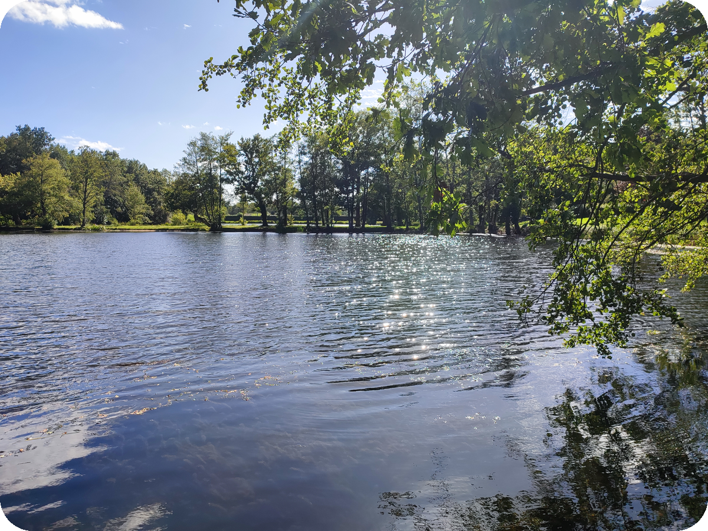

ProbabilityStochastic AnalysisMean-Field Systems
About
Welcome! I’m Alexandre Autran, a mathematics student (élève normalien) at the École Normale Supérieure de Rennes, in the Department of Mathematics. I am also a research intern in machine learning at the Centre Borelli at ENS Paris-Saclay.
I am interested in mathematical approaches to machine learning, particularly at the intersection of probability, statistics, and optimization. I enjoy understanding the theory behind learning methods while also exploring their numerical and computational aspects. My current interests also include graph learning and generative models.
Outside of work and studies, I enjoy running, cycling, going to the gym, and taking landscape photographs.
alexandre.autran@ens-rennes.fr(professional)
alexandre.autran13@gmail.com(personal)
Publications
Self-directed research preprints and selected collaborative publications.
Stochastic ControlMathematical FinanceFractional Brownian Motion
Singular Tracking of Fractional Brownian Motion under Proportional Costs
ProbabilityStochastic AnalysisJump Diffusions
Second-Order Wasserstein Response for Lévy Laws
Optimal ControlNumerical AnalysisMathematical Biology
Optimization with an Exact Discrete Adjoint for a Diffusive Lotka–Volterra Harvesting Problem
Semiconductor PhysicsDevice ModelingApplied Mathematics
Multi-Dimensional Charge Diffusion–Collection Model in Semiconductor Devices Subjected to Single Ionizing Particles
Experiences
A selection of research internships, projects, seminars, and reading groups completed during my studies.
SEP 2026 —
Machine Learning Internship
High-Dimensional Density Analysis Using Local Unimodality
Supervised by Argyris Kalogeratos (Senior Research Scientist)
Centre Borelli, ENS Paris-Saclay, France
MAY — AUG 2026
APR — JUN 2026
Research Internship
Numerical Simulation and Optimal Control of Spatial Lotka–Volterra Systems
Supervised by Martin J. Gander (Full Professor) and Bastien Chaudet-Dumas (Postdoctoral Researcher)
University of Geneva, Switzerland
APR — MAY 2026
Machine Learning Projects
Air Pollution and Cardiovascular Disease Prediction
Course taught by Myriam Maumy (Full Professor)
MSc Statistical Learning
JAN 2026
Statistical Reading Group
Supervised Statistical Learning: Prediction by Empirical Risk Minimization
Supervised by Magalie Fromont (Full Professor)
ENS de Rennes, France
NOV 2025 — JAN 2026
OCT — NOV 2025
Algebra Reading Group
Elimination Theory and Extension
Supervised by Jade Nardi (CNRS Research Scientist)
ENS de Rennes, France
JUN — AUG 2025
MAY — JUN 2025
FEB — MAR 2025
FEB — MAR 2024
L2 Research Internship
Topological Study of Matrix Groups
Supervised by Françoise Dal’Bo (Full Professor) and Jérémy Bettinger (PhD Student)
University of Rennes, France
MAY — JUN 2023
Resources
Course notes and oral-exam preparation sheets.
Master courses
Course notes I wrote during my M1/M2 years at ENS de Rennes:
EDP appliquées à la biologie
PDFFokker–Planck, entropy methods, Wasserstein flows, Keller–Segel and Fisher–KPP.
Modèles aléatoires
PDFGalton–Watson trees, Poisson processes, continuous-time Markov chains and queues.
Here are also four excellent sets of lecture notes:
Processus stochastiques
PDFGaussian processes, Brownian motion, martingales, semimartingales and stochastic integration.
Calcul stochastique
PDFItô formula, Girsanov theorem, SDEs, Feynman–Kac and diffusions.
Statistiques
PDFStatistical models, Gaussian linear models, maximum likelihood, Bayesian and nonparametric statistics.
Apprentissage statistique et grande dimension
PDFERM, VC dimension, SVMs, convexification, Ridge/Lasso and double descent.
Colles — ENS oral examinations
Mathematics oral examinations for second-year undergraduate students preparing for the Écoles Normales Supérieures entrance examinations (Ulm, Paris-Saclay, Lyon and Rennes).
Other documents
L1 exercise sheets.
Feuille 1
PDFCesàro lemma, Wilson’s theorem, sets, sequences, continuity and convexity
Feuille 2
PDFMonomorphisms, epimorphisms, integrals, sequences, norms and prime-valued polynomials
Feuille 3
PDFHeine’s theorem, arithmetic, Cantor and Cantor–Bernstein–Schröder
Feuille 4
PDFFixed points, functional equations, differentiability, compactness and arithmetic
Feuille 5
PDFMatrix traces, fixed points, functional equations, subsequences and nilpotent matrices
Feuille 6
PDFDarboux’s theorem, matrix rank, algebraic numbers and divergent series
Feuille 7
PDFLinear families, Bolzano–Weierstrass, cluster points and asymptotic equivalents
Feuille 8
PDFModulus-preserving maps, derivations, stable polynomials and Kürschák’s theorem
Feuille 9
PDFCommon complements, kernels and images, independent maps and lower bounds
Feuille 10
PDFMultiplicative maps, dual bases, matrix equations and convergence
Photographs
